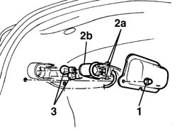

5540A80 rear exterior lightbulb - r r
- Path
- Procedures > 55 ELECTRICAL EQUIPMENT > 5540 EXTERIOR LIGHTING > 5540A lighting > 5540A80 rear exterior lightbulb - r r
- Kind
- repair procedure (removal / refitting; the operation number is the code)
- Applies to
- all engines; all production periods
- Interactive page
- https://sloeber94.github.io/elrnDB-a156/en/#/3238442
Applies to: all engines; all production periods
 Removing
Removing
 Refitting
Refitting1. Open the trunk lid panel and unscrew the two clamping screws of the light fender.
2. Unloose the check tongs (2a) and extract the light holder (2b).
3. Take the lights off from the light holder.
(Bayonet joint)

Applies to: all engines; all production periods
Refitting
RemovingCheck the functionality of the lights.
Reassemble the lights in the light holder.
Inserit the light holder and put the check tongs in.
Replace the light fender and clamp it by the screws.
Test the functionality of the reserving and retrofog lights.